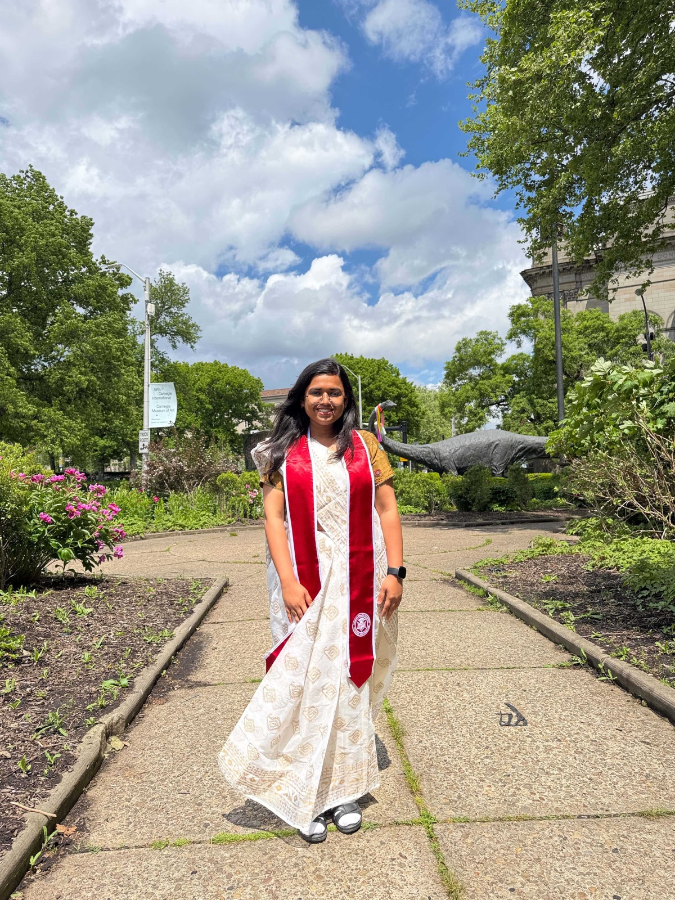

LLM Pretraining
Designing objectives and data strategies that develop reasoning before post-training begins.
Research Scientist · NVIDIA
I am a Research Scientist at NVIDIA Applied Deep Learning Research (ADLR). My research focuses on building stronger reasoning capabilities into large generative models during pretraining through innovations in smart data, smart integration, and smart models.
I completed my PhD at the Language Technologies Institute (LTI), Carnegie Mellon University, advised by Eric Nyberg. My dissertation, Bridging Pretraining and Post-Training: Toward Reasoning-Centric Large Language Models, explores how reasoning can be developed across the full training pipeline. Before that, I earned my undergraduate degree in Computer Science and Engineering from Bangladesh University of Engineering and Technology (BUET).

Research focus
Designing objectives and data strategies that develop reasoning before post-training begins.
Exploring reinforcement signals as part of the learning process, from pretraining onward.
Building language models that reason more reliably across mathematics, agents, and multimodal tasks.
Selected work
Career
Background